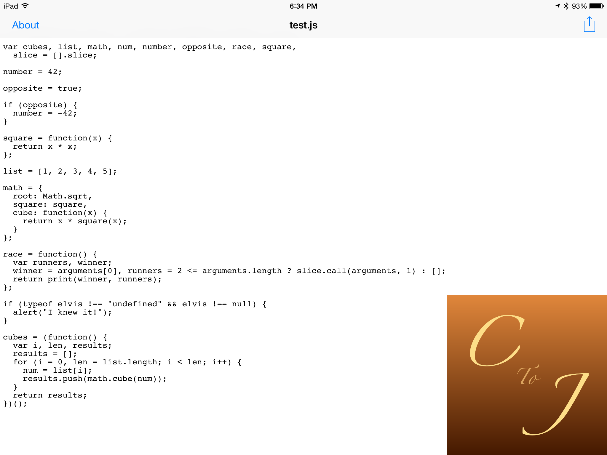
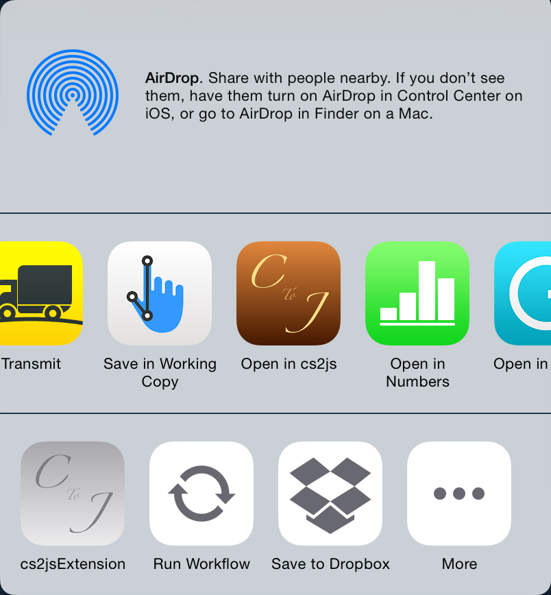

Cooperates with another app
You can use your favorite text editor apps.

Supports
App Extension
You can compile the CoffeeScript file within another app.
CoffeeScript compiler for iOS 8
You can use your favorite text editor apps.
You can compile the CoffeeScript file within another app.